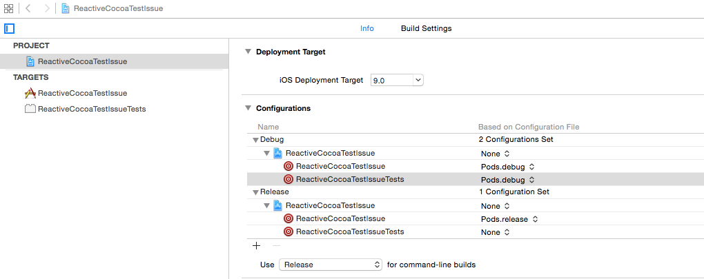
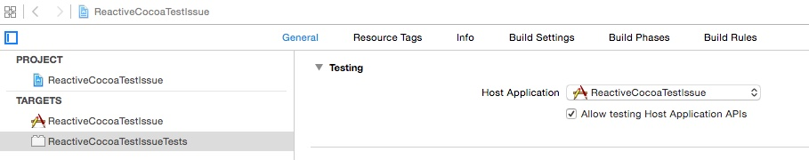

11 Aug 2015
Last weekend, I stumbled across something while trying to learn MVVM.
I was playing with the Colin Eberhardt’s tutorial which explains how to set up the pattern using ReactiveCocoa. As I was progressing through the second part, I saw this note:
If you’re feeling adventurous, prove it by writing a unit test that executes a search and navigates from one ViewModel to the next
Because I wanted to be able to set up more tests by using MVVM, I decided that I felt adventurous enough to test the ViewModels without any UI.
‘We’ll put their name to the test’
So I tried to set up a first basic test:
- (void)testPerformSearch
{
XCTestExpectation *expectation = [self expectationWithDescription:@"Search success"];
id<RWTViewModelServices> viewModelServices = [[MockService alloc] initWithPushBlock:^(id viewModel) {
[expectation fulfill];
}];
RWTFlickrSearchViewModel *viewModel = [[RWTFlickrSearchViewModel alloc] initWithServices:viewModelServices];
viewModel.searchText = @"beach";
[viewModel.executeSearch execute:nil];
[self waitForExpectationsWithTimeout:2 handler:nil];
}
Because I was using some ReactiveCocoa here, it was necessary to import the ReactiveCocoa header to make this work. To do this, I just applied the same pod configuration to my test target:

Once my test compiled, I was quite confident that it would pass. However, here is what I got:
error: -[ReactiveCocoaTestIssueTests testExecute] : failed: caught "NSInternalInconsistencyException", "-and must only be used on a signal of RACTuples of NSNumbers. Instead, received: <RACTuple: 0x7fdd8bd40af0> (
0,
1
)"
This was weird… a RACTuple that is not a RACTuple…
After some time digging, I found this isssue in ReactiveCocoa github.
One explaination might be that we have more than only one RACTuple class.
It appears that this is related to some setup issues with CocoaPods that does not operate well with the default test setup of Xcode.
By default, tests are run against the Host Application (see your Project > Targets > General)

and linking the test target to ReactiveCocoa doubles the symbols because Xcode perform some dynamic code injection behind the scene.
Getting out of the pit
There are multiple solutions to this, but, unfortunately, nothing straightforward which use CocoaPods. As I discovered, I am not the first one to stumble upon this and the feature is still missing.
So what can one do ?
- One solution is to change your testing settings and stop testing against the Application. In this case, you need to compile all the code you want to test in your test target. This can be quite cumbersome because every time you add a class in your App, you may need to add it to your test target. Another problem is that you run your tests outside the context of your running App, this can be problematic in some cases.
- Another quicker solution I found was to add the Pods headers folder to the Test target’s header path recursively:
$(PROJECT_DIR)/Pods/Headers. This is kind of dirty, but that do the trick.
- Last, but not least, setting up your project/workspace entirely by yourself is, of course, a viable solution. I am still new to CocoaPods, and as I see its immediate value, I am also wondering if relying on it in the long run might have some annoying downsides. I have been a long time user of git submodules. So you could still do this because you won’t relying of some generated settings on your project.
Maybe there are other solutions but, for now, I have just used the second one for my problem.
If you want to see an example of the problem, I shared a project on github.
I hope this will help someone!
04 Aug 2015
The associated playground can be found in this repo!
The context
I am quite new at using Core Data.
I have started to use it just a few months back, and I’ve been using it extensively the last couple of months.
During this time, I have learned some things about NSManagedObjectContext that I want to share.
Here, I’ll explain how the saving mechanism works with multiple contexts created using different methods.
We’ll work with a very basic Core Data model which will contain only one single entity.
+-----------------+
| Person |
+-----------------+
| name |
+-----------------+
Here is our context:
- we’ve got a main context that is used by our controllers
- we want to refresh our data using server requests and store it asynchronously to Core Data (server requests are another topic so we will skip this part)
The first approach
To get started quickly with our topic, the heavy lifting of creating the model and persistent store coordinator will be done behind the scene:
import CoreData
let persistentStoreCoordinator = try createPersistentStoreCoordinator()
Now that we have our persistentStoreCoordinator, we create our main context:
let mainContext = NSManagedObjectContext(concurrencyType: .MainQueueConcurrencyType)
mainContext.persistentStoreCoordinator = persistentStoreCoordinator
As we want to share data between the two contexts, we create a child context for our background update:
let childContext = NSManagedObjectContext(concurrencyType: .MainQueueConcurrencyType)
childContext.parentContext = mainContext
Then, we create a new entity in the child context as if it came from the server:
let person = addPersonToContext(childContext, name: "John")
Now we save our content:
Let’s check that we have the new content in the main context using a fetch request:
let results = try mainContext.executeFetchRequest(NSFetchRequest(entityName: "Person"))
if let createdPerson = results.first as? Person {
print(createdPerson) // "name: John"
} else {
print("Noone there!")
}
Yes! Everything seems ok.
To be sure, let’s just check if everything was saved in the persistent store using a third context as if we were launching our app again:
let secondLaunchMainContext = NSManagedObjectContext(concurrencyType: .MainQueueConcurrencyType)
secondLaunchMainContext.persistentStoreCoordinator = persistentStoreCoordinator
and fetch our data:
if let createdPerson = try secondLaunchMainContext.executeFetchRequest(NSFetchRequest(entityName: "Person")).first as? Person {
print(createdPerson)
} else {
print("Noone there!") // "Noone there!"
}
Wait, what? There is no data? What happened?
Here is the first important lesson to learn.
Let’s have a look at the official documentation of save():
Attempts to commit unsaved changes to registered objects to the receiver’s
parent store.
This can be misleading. When one see parent store he can understand the parent persitent store of my context hierarchy.
However, what is meant by parent store is either:
- the persistentStoreCoordinator
- the parentContext
So, if your context was setup with a parent context, changes are commited to his parent but no further.
To save it to the persistent store, you’ll need to call save() on contexts all the way up in the hierarchy until you reach the persistent store.
Fixing our first approach
So, we have our initial setup.
import CoreData
let persistentStoreCoordinator = try createPersistentStoreCoordinator()
let mainContext = NSManagedObjectContext(concurrencyType: .MainQueueConcurrencyType)
mainContext.persistentStoreCoordinator = persistentStoreCoordinator
But to spice it a little, let’s create another entity that will exist in the main context.
For example, this entity could’ve come from another child context:
let ourOtherPerson = addPersonToContext(mainContext, name: "Billy")
Now, we continue as before with the server data we want to save in the persistent store:
let childContext = NSManagedObjectContext(concurrencyType: .MainQueueConcurrencyType)
childContext.parentContext = mainContext
let person = addPersonToContext(childContext, name: "John")
Now, as we’ve learned before, we save our content in the child context and then in the main context:
try childContext.save()
try mainContext.save()
We have saved our “John” in the persistent store, let’s check that:
let secondLaunchMainContext = NSManagedObjectContext(concurrencyType: .MainQueueConcurrencyType)
secondLaunchMainContext.persistentStoreCoordinator = persistentStoreCoordinator
let fetchRequest = NSFetchRequest(entityName: "Person")
fetchRequest.predicate = NSPredicate(format:"%K like %@", "name", "John")
if let createdPerson = try secondLaunchMainContext.executeFetchRequest(fetchRequest).first as? Person {
print(createdPerson) // "name: John"
} else {
print("Noone there!")
}
Problem solved!
But wait… what happened to our “Billy”. We wanted to store only “John” into the persitent store, not “Billy”:
fetchRequest.predicate = NSPredicate(format:"%K like %@", "name", "Billy")
if let createdPerson = try secondLaunchMainContext.executeFetchRequest(fetchRequest).first as? Person {
print(createdPerson) // "name: Billy"
} else {
print("Noone there!")
}
Oh no! We’ve saved “Billy” as well!
Yet, this seems coherent with the fact that, as we’ve performed a save() on the main context, all objects it contains are saved.
So what can we do if we only want to save John without saving Billy?
Confined save
Let’s do it again, we setup our main context with “Billy”
import CoreData
let persistentStoreCoordinator = try createPersistentStoreCoordinator()
let mainContext = NSManagedObjectContext(concurrencyType: .MainQueueConcurrencyType)
mainContext.persistentStoreCoordinator = persistentStoreCoordinator
let ourOtherPerson = addPersonToContext(mainContext, name: "Billy")
Then, to prevent “Billy” to be saved while we just want to save “John”, we will not create our editing context as a child of the main.
We will create what we’ll call a sibling context. These are contexts that share the same persitent store coordinator:
let siblingContext = NSManagedObjectContext(concurrencyType: .MainQueueConcurrencyType)
siblingContext.persistentStoreCoordinator = persistentStoreCoordinator
let person = addPersonToContext(siblingContext, name: "John")
Now, all we have to do is save the sibling context:
try siblingContext.save()
Let’s check that we can access our “John” from our main context:
let fetchRequest = NSFetchRequest(entityName: "Person")
fetchRequest.predicate = NSPredicate(format:"%K like %@", "name", "John")
if let createdPerson = try mainContext.executeFetchRequest(fetchRequest).first as? Person {
print(createdPerson) // "name: John"
} else {
print("Noone there!")
}
Yes! Now let’s see if “Billy” was saved:
let secondLaunchMainContext = NSManagedObjectContext(concurrencyType: .MainQueueConcurrencyType)
secondLaunchMainContext.persistentStoreCoordinator = persistentStoreCoordinator
fetchRequest.predicate = NSPredicate(format:"%K like %@", "name", "Billy")
if let createdPerson = try secondLaunchMainContext.executeFetchRequest(fetchRequest).first as? Person {
print(createdPerson)
} else {
print("Noone there!") // "Noone there!"
}
We did it!
Conclusion
Here, we learned that:
- calling
save() on a context will only send changes one step up the hierarchy
save() will commit changes contained in the whole context
I hope that this may help anyone who did not yet grasp how Core Data save its content throught contexts.
As a side note: for the sake of simplicity here, we have only worked with entity insertion.
When you start playing with entity attributes, you’ll need to perform some refreshObject(_:mergeChanges:) calls to see the saved values in other contexts.